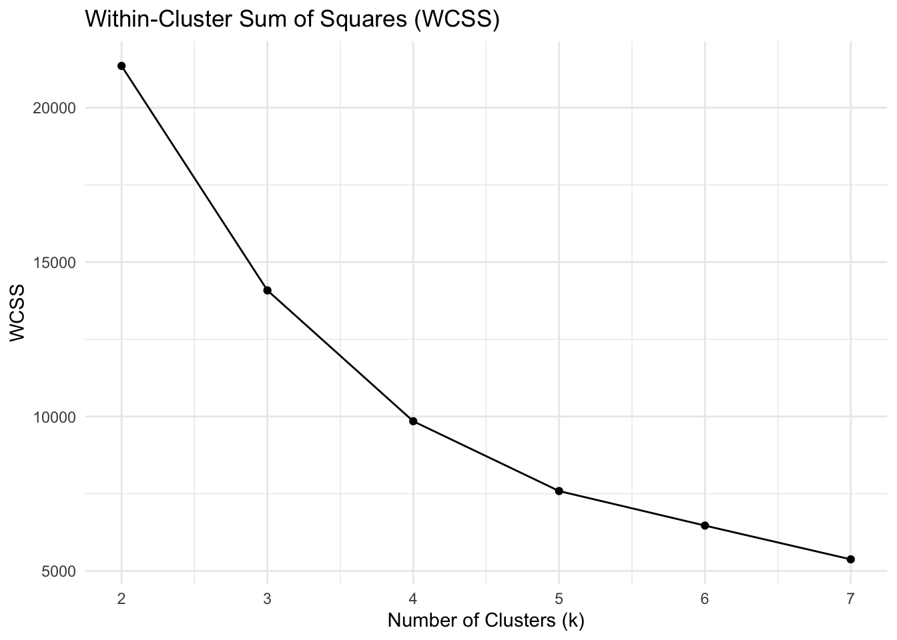
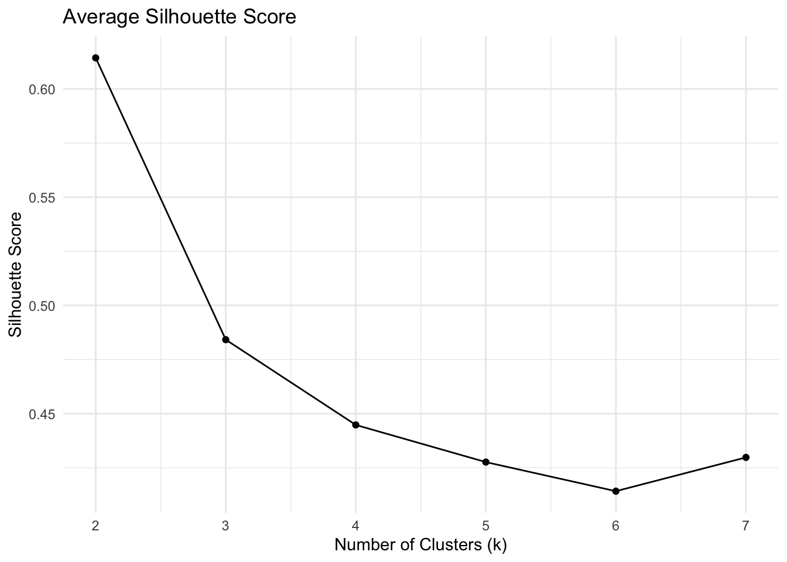
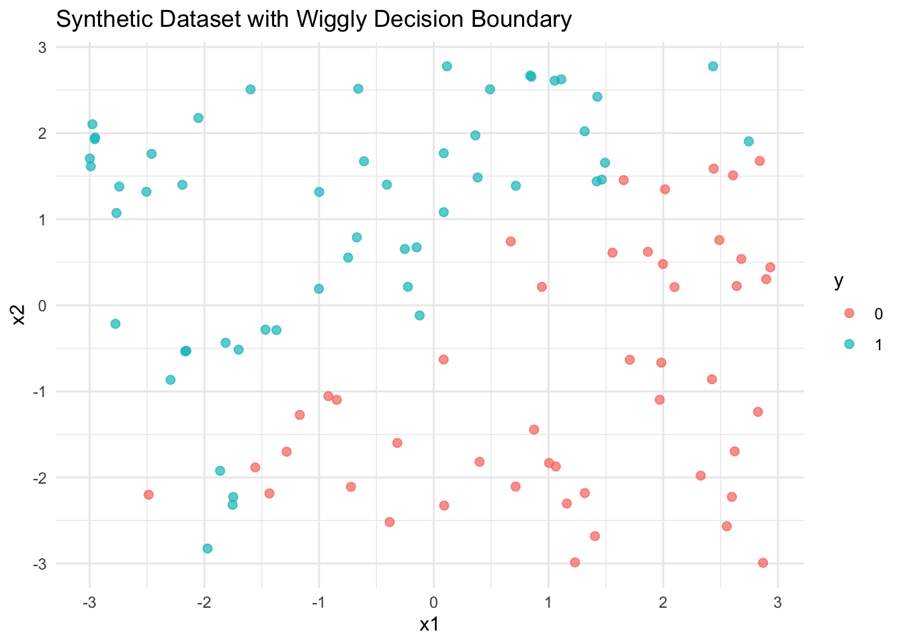
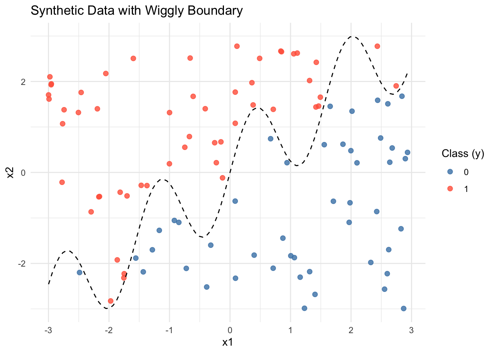
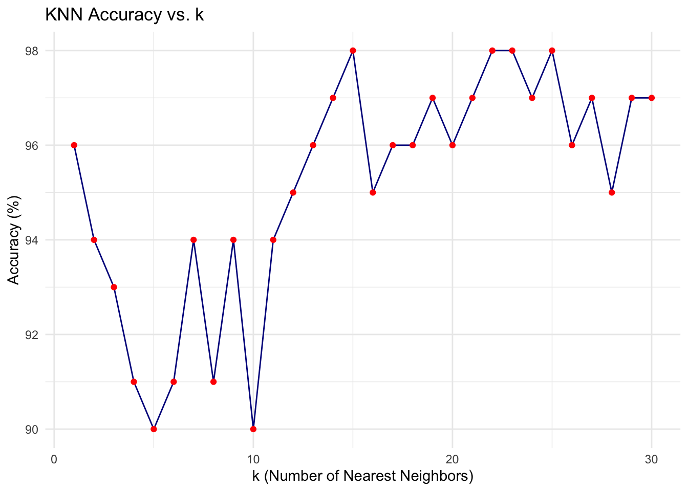

After running both the custom K-means implementation and R’s built-in kmeans() function on the Palmer Penguins dataset (using bill_length_mm and flipper_length_mm), we observe that:
Cluster Assignments: While the exact cluster labels may differ (due to label switching), the overall grouping of data points is similar. Both algorithms form clusters that align with natural groupings in the data. Centroid Convergence: The final centroid coordinates from both implementations are very close, indicating that the custom algorithm correctly minimizes the within-cluster sum of squares over iterations. Convergence Steps: The custom implementation iteratively updates centroids using Euclidean distance and shows how clusters shift and stabilize, giving clear visual insight into the algorithm’s behavior. The built-in version achieves the same result more efficiently but without step-by-step visibility. Reproducibility: Setting the same random seed ensures both implementations start with similar initial centroids, allowing for a more direct comparison. In summary, the custom K-means algorithm successfully replicates the behavior of the built-in version, validating both its correctness and usefulness as a learning tool to understand clustering mechanics.
library(tidyverse)library(cluster)library(palmerpenguins)# Prepare the datadf <- penguins[, c("bill_length_mm", "flipper_length_mm")] |>drop_na()X <-as.matrix(df)
# Calculate WCSS (within-cluster sum of squares) and Silhouette for K = 2 to 7wcss <-c()avg_silhouette <-c()for (k in2:7) { kmeans_model <-kmeans(X, centers = k, nstart =10) wcss[k -1] <- kmeans_model$tot.withinss sil <-silhouette(kmeans_model$cluster, dist(X)) avg_silhouette[k -1] <-mean(sil[, 3])}metrics_df <-tibble(k =2:7,wcss = wcss,silhouette = avg_silhouette)
# Plot WCSSggplot(metrics_df, aes(x = k, y = wcss)) +geom_line() +geom_point() +labs(title ="Within-Cluster Sum of Squares (WCSS)",x ="Number of Clusters (k)",y ="WCSS") +theme_minimal()

# Plot Average Silhouette Scoreggplot(metrics_df, aes(x = k, y = silhouette)) +geom_line() +geom_point() +labs(title ="Average Silhouette Score",x ="Number of Clusters (k)",y ="Silhouette Score") +theme_minimal()

2a. K Nearest Neighbors
# Generate synthetic data for KNN classificationset.seed(42)n <-100x1 <-runif(n, -3, 3)x2 <-runif(n, -3, 3)x <-cbind(x1, x2)# Define the non-linear boundaryboundary <-sin(4* x1) + x1y <-ifelse(x2 > boundary, 1, 0) |>as.factor()# Combine into a dataframedat <-data.frame(x1 = x1, x2 = x2, y = y)# Plot the datalibrary(ggplot2)ggplot(dat, aes(x = x1, y = x2, color = y)) +geom_point(size =2, alpha =0.7) +theme_minimal() +labs(title ="Synthetic Dataset with Wiggly Decision Boundary")

# Plot the synthetic data with optional boundaryggplot(dat, aes(x = x1, y = x2, color = y)) +geom_point(size =2, alpha =0.8) +stat_function(fun =function(x) sin(4* x) + x, color ="black", linetype ="dashed") +scale_color_manual(values =c("steelblue", "tomato")) +theme_minimal() +labs(title ="Synthetic Data with Wiggly Boundary",x ="x1",y ="x2",color ="Class (y)")

# Generate test data with a different seedset.seed(123)n_test <-100x1_test <-runif(n_test, -3, 3)x2_test <-runif(n_test, -3, 3)x_test <-cbind(x1_test, x2_test)boundary_test <-sin(4* x1_test) + x1_testy_test <-ifelse(x2_test > boundary_test, 1, 0) |>as.factor()test_dat <-data.frame(x1 = x1_test, x2 = x2_test, y = y_test)
# Compare with built-in class::knnlibrary(class)pred_builtin <-knn(train = train_x, test = test_x, cl = train_y, k =5)mean(pred_builtin == test_y)
[1] 0.9
# Evaluate accuracy across k = 1 to 30accuracies <-numeric(30)for (k in1:30) { pred_k <-predict_knn(train_x, train_y, test_x, k = k) accuracies[k] <-mean(pred_k == test_y)}accuracy_df <-tibble(k =1:30,accuracy = accuracies *100)# Plot accuracy vs. kggplot(accuracy_df, aes(x = k, y = accuracy)) +geom_line(color ="darkblue") +geom_point(color ="red") +labs(title ="KNN Accuracy vs. k",x ="k (Number of Nearest Neighbors)",y ="Accuracy (%)") +theme_minimal()

2b. Key Drivers Analysis
todo: replicate the table on slide 75 of the session 5 slides. Specifically, using the dataset provided in the file data_for_drivers_analysis.csv, calculate: pearson correlations, standardized regression coefficients, “usefulness”, Shapley values for a linear regression, Johnson’s relative weights, and the mean decrease in the gini coefficient from a random forest. You may use packages built into R or Python; you do not need to perform these calculations “by hand.”
If you want a challenge, add additional measures to the table such as the importance scores from XGBoost, from a Neural Network, or from any additional method that measures the importance of variables.